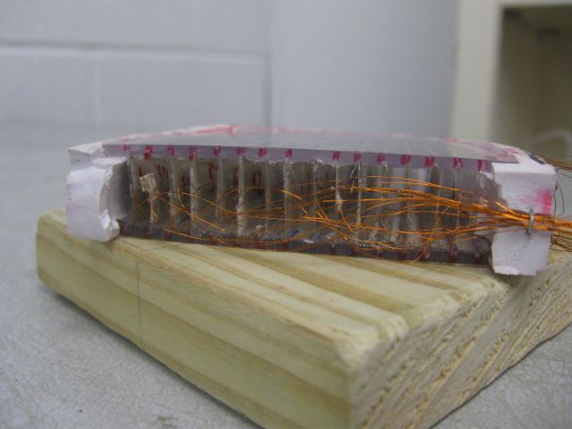
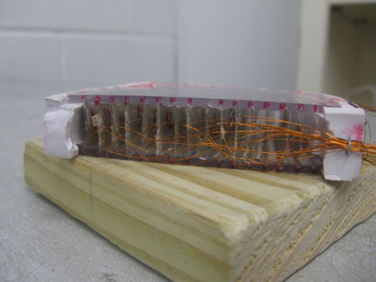
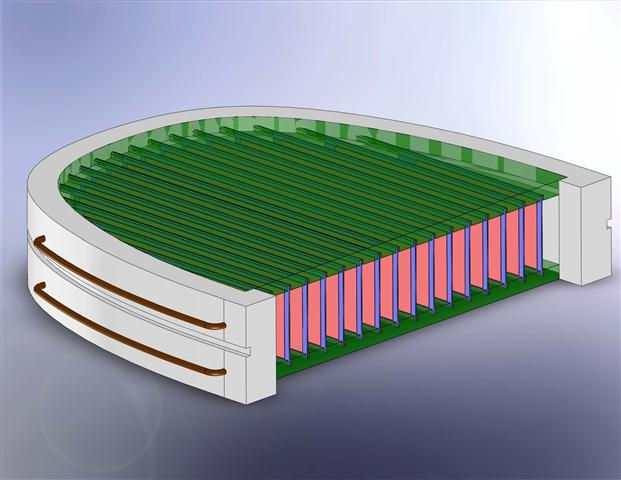

Shoe-Mounted Piezoelectric Transducer for Energy Harvesting
During the summer of 2009, I worked as a researcher in the Mechanical Engineering department at Texas A&M University. I designed and prototyped a shoe that, when walked about in, generates electricity through the actuation of piezoelectric polymer strips. The compressive force of a heel strike bends the sixteen strips fitted into an insert in the rubber sole of the shoe. The resulting potential is stored in a capacitor and can be used for a variety of applications. The paper I wrote documenting the design can be accessed at the link below.
My Paper 

